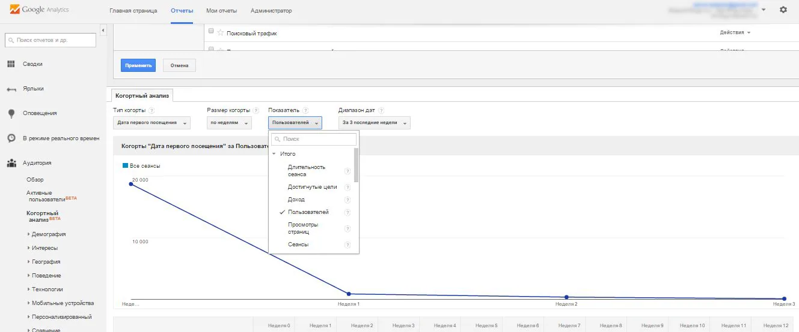
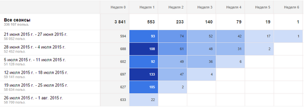
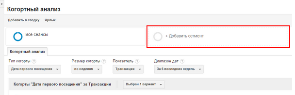
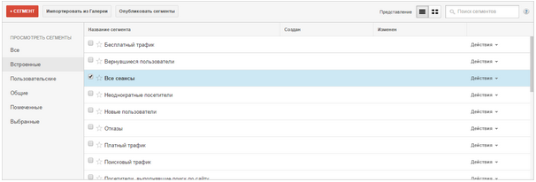
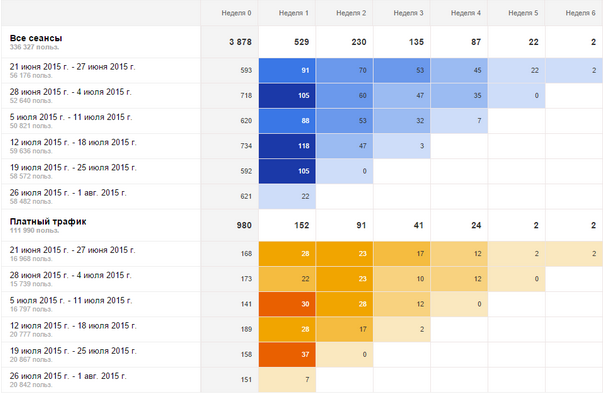

Когортный анализ в Google Analytics: пошаговая инструкция
Сегодня нет инструмента, с точностью до сотых измеряющего влияние той или иной тактики продвижения на лояльность пользователя. Да что говорить, если даже долговременный эффект от применения конкретных инструментов и тактик Google Analytics научился измерять только в январе 2015 года. Зато отчет по когортному анализу в GA позволяет снять любые претензии в духе «прошел уже целый месяц, где результаты».
Для того, чтобы понять, что же такое когортный анализ, давайте определимся, что такое в принципе когорта.
Когорта — это группа людей (посетителей), сформированная особым образом по временному признаку: например, месяцу регистрации, месяцу первой транзакции или первого посещения сайта.
В экономике, социологии и медицине такие группы людей и называются когортами, а метод их исследования — когортным анализом.
Какие данные показывает отчёт «Когортный анализ» в Google Analytics?
В отчете можно посмотреть данные из четырех блоков: тип и размер когорты, показатель и диапазон дат.
Тип когорты
Признак, по которому мы будем собирать когорту. На момент написания статьи в Google Analytics можно строить когортный анализ только по «Дате первого посещения». Однако поскольку тип когорты при построении отчета мы выбираем из выпадающего списка, есть надежда, что в дальнейшем Google добавит и другие варианты типов когорт.
Размер когорты
Данный параметр определяет, какой временной интервал будет отведён под каждую когорту. На данный момент есть возможность выбора построения когорт по дням, неделям и месяцам. Выбрав размер по дням, отдельной когортой будут считаться посетители за определённый день — например, посетители, впервые зашедшие на сайт 03.08.2015. Если выбрать неделю, то когортой будут все посетители, впервые зашедшие на сайт в период с 3.08.2015 по 09.08.2015. Аналогичная ситуация с месяцами.
Показатель
Пожалуй, наиболее важная настройка данного отчёта. Вы можете выбрать 1 из 14 возможных показателей, который планируете проанализировать в разрезе когорт. Рассмотрим детально все существующие (на момент написания статьи) показатели.

14 ключевых показателей
- Длительность. Выбрав данный показатель, в отчёт будет выводится суммарная длительность всех сеансов конкретной когорты.
- Достигнутые цели. В таблице будет выводится общее количество достигнутых целей по когортам.
- Доход. Этот показатель выводит суммарный доход по когортам.
- Пользователь. Общее количество пользователей в когорте и изменение их объёма со временем.
- Просмотры страниц. Выбрав этот показатель, можно проанализировать общее количество просмотренных страниц в разрезе когорт.
- Сеансы. Выбор этого показателя даёт возможность проанализировать общее количество сеансов по когортам и то, как объём сеансов меняется со временем для каждой из когорты.
- Транзакции. Аналогично сеансам, но в данном случае в таблице будет отображаться информация по общему количеству транзакций.
- Длительность сеанса в расчете на одного пользователя. Определяет среднюю длительность сеансов одного пользователя в когорте. Считается как общее количество времени, проведенного на сайте отдельной когортой, за выбранный временной промежуток, поделённое на размер когорты. Более интересным был бы показатель «Средняя длительность сеанса», но на данный момент такого показателя в когортном анализе Google Analytics нет.
- Достигнутые цели в расчете на одного пользователя. Считается как общее количество достигнутых когортой целей, разделённых на размер когорты. Здесь также более интересно было бы проанализировать динамику изменения коэффициента конверсии по когорте, но, увы.
- Доход в расчете на пользователя. Отображает в таблице общую сумму дохода по когорте, разделённую на количество пользователей в когорте.
- Количество просмотров страниц на пользователя. Этот показатель рассчитывается как общее количество просмотренных когортой страниц в определённый настройками период времени, разделённый на размер когорты.
- Количество сеансов на пользователя. Данный показатель отображает общее количество сеансов, начатых когортой за определённый временной отрезок, разделённый на размер когорты.
- Количество транзакций на пользователя. Выбрав этот показатель, в таблицу будет выведена информация об общем количестве транзакций, совершённых когортой, разделённая на количество посетителей в когорте.
- Коэффициент удержания клиентов. Данный показатель даёт возможность посмотреть в относительном выражении, какая часть пользователей по определённой когорте возвращается на сайт после первого посещения. Позже, проанализировав данный показатель, мы сможем определить, насколько длительное время на пользователей оказывает влияние проведённая нами акция или рекламная кампания.
Остановимся более детально на диапазоне дат в когортном анализе и способах настройки этого параметра.
Как настроить диапазон дат?
Диапазон дат — это последняя настройка, которую вы можете менять при построении когортного анализа в Google Analytics. Она определяет общий период отчёта и зависит от выбранного вами размера когорты. На данный момент существуют 3 варианта при выборе диапазона дат.
Для размера когорты «По дням»:
- за последних дней: 7;
- за последних дней: 14;
- за последних дней: 21;
- за последних дней: 30.
Для размера когорты «По неделям»:
- за последнюю неделю;
- за 3 последние недели;
- за 6 последних недель;
- за 9 последних недель;
- за 12 последних недель.
Для размера когорты «По месяцам»:
- за последний месяц;
- за 2 последних месяца;
- за 3 последних месяца.
В принципе, на этом настройка отчёта закончена. Для того, чтобы вы научились легко читать когортный анализ, рассмотрим алгоритм расчёта данных и то, как выводить данный отчёт при оформлении информацию в таблицу. Для получения более чистой статистики исключите все возможные источники спама в Google Analytics (читайте подробную инструкцию).
Пример построения отчета
Для примера возьмём следующие настройки для построения отчёта:
- тип когорты: дата первого посещения;
- размер когорты: по неделям;
- показатель: транзакции;
- диапазон дат: за 6 последних недель.
В итоге мы получим следующую таблицу:

В строках выводится информация о когортах. В нашем случае, так как в параметре «Диапазон дат» было выбрано «За 6 последних недель», в таблице имеются 6 когорт:
- 21 июня 2015 г. — 27 июня 2015 г.;
- 28 июня 2015 г. — 4 июля 2015 г.;
- 5 июля 2015 г. — 11 июля 2015 г.;
- 12 июля 2015 г. — 18 июля 2015 г.;
- 19 июля 2015 г. — 25 июля 2015 г.;
- 26 июля 2015 г. — 1 августа 2015 г.
В столбцах выводятся номера недель с 0 по 6 опять же в связи с тем, что нами был выбран диапазон дат последние 6 недель. Теперь рассмотрим одну из когорт: например, 12 июля 2015 г. — 18 июля 2015 г. В эту когорту попали посетители, которые впервые зашли на сайт в период с 12 по 18 июля 2015 года. Из таблицы видно, что на нулевой неделе пользователями, которые в этот период впервые зашли на сайт, было совершенно 697 транзакций. Далее мы видим, что на первой неделе количество транзакций в данной когорте составило 133, на второй 47 и на третей недели всего 4.
Какую пользу можно извлечь из этих данных?
Цифра 133 говорит нам о том, что часть пользователей, которые впервые зашли на сайт в период с 12 по 18 июля, вернулись через неделю, то есть в период с 19 по 25 июля и совершили 133 транзакции. Мы не можем утверждать, что это были повторные продажи, так как, возможно, большинство пользователей, которые впервые попали на сайт в период с 12 по 18 июля, при первом сеансе не совершили транзакции, а только добавили сайт в закладки либо просто запомнили его адрес. В течение недели часть пользователей могли изучать аналогичные предложения наших конкурентов, после чего вернулись спустя неделю в период с 19 по 25 июля и уже при повторном сеансе совершили транзакции. Также мы не можем утверждать, что ни одна из этих продаж не была повторной, так как пользователи вполне могли впервые зайти на сайт в период с 12 по 18 июля, совершить при этом транзакции, после чего вернуться спустя неделю в период с 19 по 25 июля и совершить повторную покупку.
В свете вышесказанного, цифры 47 и 4 — это количество транзакций, совершённых посетителями, впервые попавшими на сайт с 12 по 18 июля, но вернувшимися и сделавшими транзакции в период с 26 июля по 1 августа, а также с 2 по 8 августа. Таким же образом рассчитываются и выводятся в отчёт все остальные показатели.
При стандартных настройках данного отчёта у нас нет возможности фильтрации данных по различным параметрам (например, источник или канал трафика), а при построении когортного анализа нам интересны именно определенные каналы или рекламные кампании, а не весь трафик в целом.
Для решения этой проблемы мы можем воспользоваться встроенными сегментами либо создать любые пользовательские расширенные сегменты. Например, информацию представленную в таблице выше по всему трафику, можно легко сравнить с платным трафиком. Для этого надо добавить в интерфейсе расширенный сегмент — просто нажмите в верхней части интерфейса Google Analytics «+Добавить сегмент».

Далее вы можете использовать сегменты, созданные в каждом представлении по умолчанию. Их список вы увидите сразу после нажатия кнопки «+Добавить сегмент».

Вы сможете настроить любой интересующий вас пользовательский сегмент самостоятельно, нажав красную кнопку «+СЕГМЕНТ» в верхнем левом углу появившегося диалогового окна. Для примера, мы сравним весь трафик с платным. Для этого выбираем из списка встроенных сегментов «Платный трафик».

Оранжевая таблица показывает информацию по когортам именно по платному трафику. Таким образом вы можете фильтровать трафик по любым параметрам и показателям для анализа поведения когорт.
Когортный анализ поможет более чётко оценить эффективность ваших решений. Анализируйте, какие ваши действия приносят наибольший положительный и долгосрочный результат, и концентрируйтесь на них. Буду рад ответить на возникшие вопросы в комментариях. Кстати, публикаций по когортному анализу в GA — на пальцах сосчитать, так что шлю плюсы в карму за лайки и ретвиты.
Оригинал – https://netpeak.net/ru/blog/kogortniy-analiz-v-google-analytics-poshagovaya-instruktsiya/